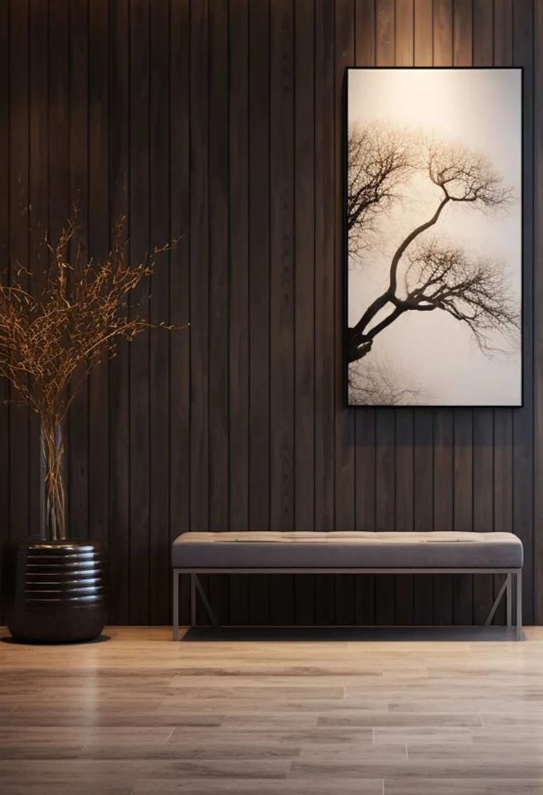
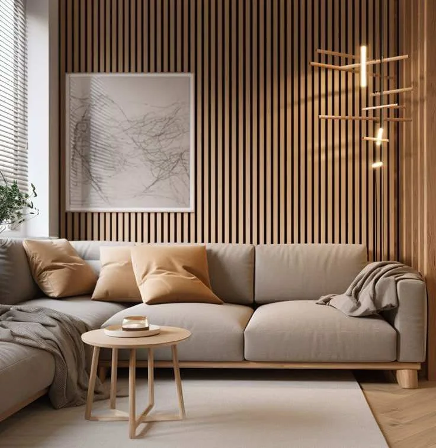
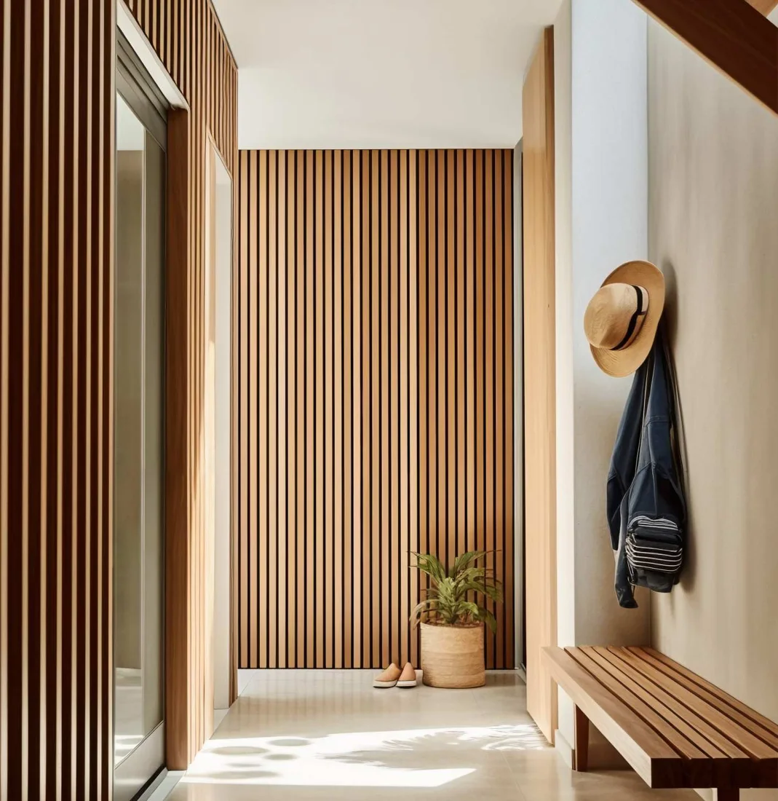
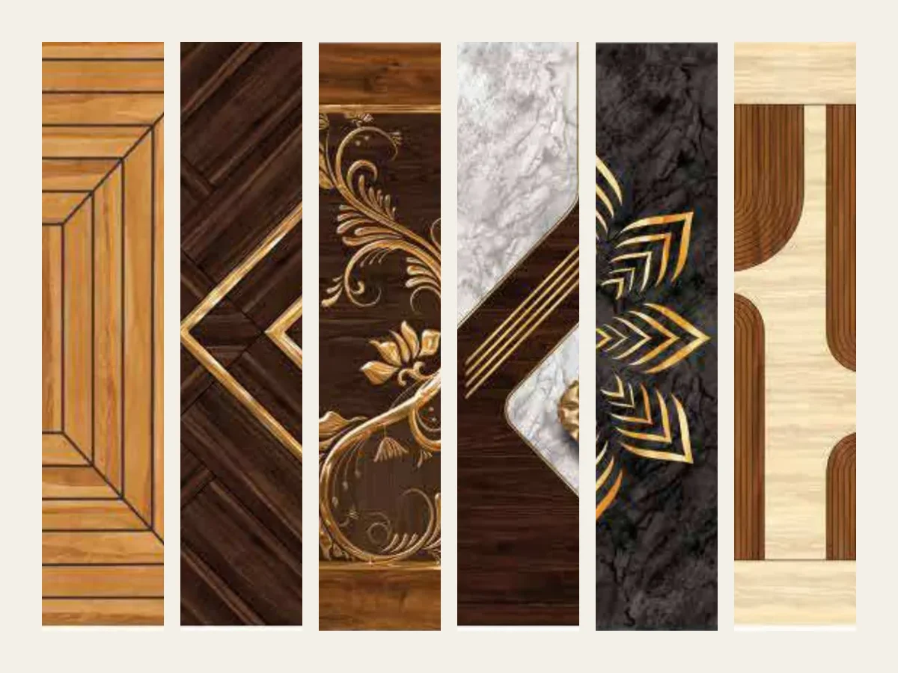
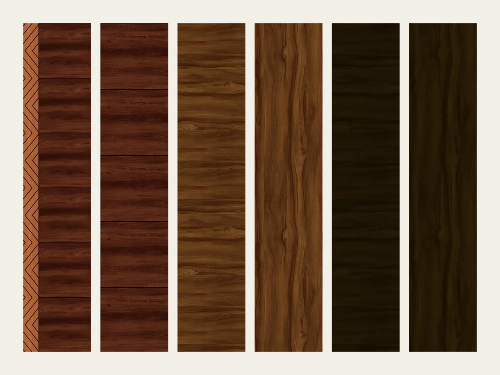
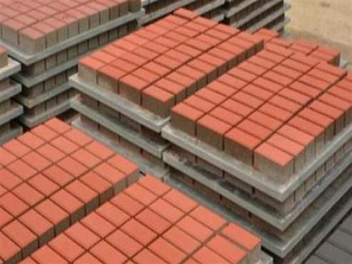
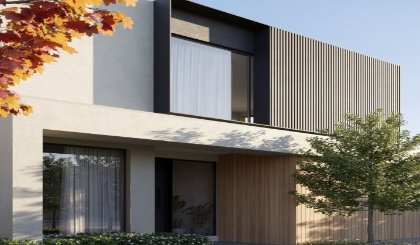
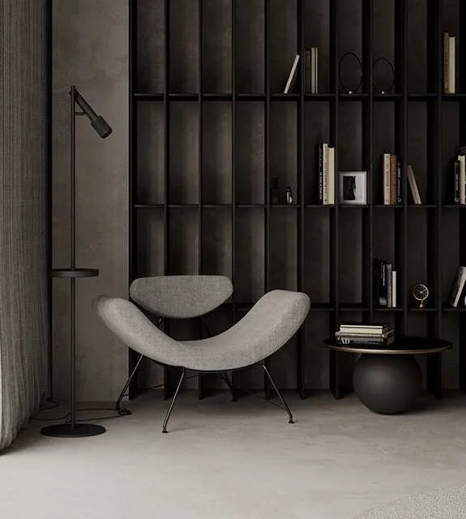

Blogs
Insights for better spaces
Ideas, guides and answers on WPC louvers, doors, boards and exterior products from Green Plastwood.

Our blogs

LouversWhat makes 24 mm WPC louvers look so different on modern walls?
View more
LouversCan a 15 mm louver make a plain wall look like a designed space?
View more
LouversWhat can a 12 mm WPC louver do for a wall that paint can't?
View more
DoorsWhat if your door didn't have to look like every other door?
View more
DoorsCan a door become a design feature instead of just an entrance?
View more Guide
GuideWhy is WPC being considered for more than just doors?
View more
PalletsWhat happens when you replace traditional brick pallets with plastic-composite pallets?
View more
ApplicationsWhat if one material could transform your walls, floors and outdoor spaces?
View more
FAQs
Have questions? We’ve got answers.
Quick answers to common questions about WPC louvers, doors, building materials, pallets and where they are used.

What are 24 mm WPC/PVC louvers?
24 mm WPC/PVC louvers are decorative architectural profiles designed to create structured wall, ceiling, partition and façade surfaces. WPC louvers combine a wood-inspired appearance with the material characteristics described in the Green Plastwood catalogue, making them suitable for both interior and exterior applications.
Where can 24 mm WPC louvers be used?
24 mm WPC louvers can be used for feature walls, ceilings, partitions, façade elements and other interior or exterior architectural applications. Green Plastwood's louver range is designed for residential and commercial walls and ceilings.
Are WPC louvers suitable for outdoor applications?
Yes, Green Plastwood describes its WPC louvers as suitable for exterior as well as interior applications. The catalogue specifically presents the louver range for exterior and interior walls and ceilings.
Are WPC louvers waterproof and termite resistant?
Green Plastwood's catalogue describes its louver panels as water resistant/waterproof and termite proof. These are manufacturer-stated product claims and should be considered in conjunction with the intended application and installation method.
How do I choose the right WPC louver for my project?
Choose a louver based on application, profile/thickness, required length, colour, installation design and whether it will be used indoors or outdoors. For a project in Ahmedabad or elsewhere in Gujarat, it is also useful to confirm the exact profile and available stock before ordering.
Where can I buy WPC louvers in Ahmedabad?
WPC louvers can be sourced from Green Plastwood/SNG Eco India's Ahmedabad operation. The catalogue lists the company's corporate office in Sola, Ahmedabad, Gujarat.
More on this topic: What makes 24 mm WPC louvers look so different on modern walls?
What are 15 mm 8G WPC/PVC louvers?
15 mm 8G WPC/PVC louvers are a specific louver profile used for decorative architectural applications. They can be considered for wall, ceiling, partition and design applications where a structured louver appearance is required.
Where can 15 mm 8G WPC louvers be used?
They can be used for interior walls, ceilings, partitions and selected exterior design applications, depending on the installation system and project requirements. Green Plastwood's broader WPC louver range is designed for residential and commercial interiors and exteriors.
What makes WPC louvers different from conventional wooden louvers?
WPC louvers are designed to provide a wood-inspired appearance while offering material characteristics such as moisture resistance and termite resistance as stated in the manufacturer catalogue. Green Plastwood describes its louver products as a combination of recycled hardwood fibres and virgin polymer resins using co-extrusion technology.
Can 15 mm 8G louvers be used for a feature wall?
Yes. A louver profile can be used to create a feature wall by installing repeated vertical or horizontal profiles with controlled spacing. The final visual effect depends on the profile, spacing, colour and installation pattern.
Are 15 mm 8G WPC louvers low maintenance?
Green Plastwood positions its WPC louver range as a durable, low-maintenance alternative to conventional wood-based exterior cladding. Exact maintenance requirements can vary according to location, exposure and installation.
What should I check before ordering 15 mm 8G WPC louvers?
Check the exact profile, dimensions, available lengths, colour, quantity, application and fixing requirements with the supplier. This is particularly important for large architectural projects where the required quantity and installation system need to be planned in advance.
More on this topic: Can a 15 mm louver make a plain wall look like a designed space?
What are 12 mm 2G WPC/PVC louvers?
12 mm 2G WPC/PVC louvers are a decorative WPC/PVC louver profile intended for architectural design applications. They can be used to create linear patterns on walls, ceilings, partitions and other designed surfaces.
Can 12 mm 2G WPC louvers be used for interior walls?
Yes. WPC louvers are suitable for interior wall applications such as feature walls, decorative panels and partitions. Green Plastwood's louver catalogue specifically covers interior wall and ceiling applications.
Can 12 mm 2G WPC louvers be used on ceilings?
Yes. WPC louver systems can be used for decorative ceilings and ceiling features. They can create repetitive linear patterns that add depth and visual structure to an otherwise plain ceiling.
Are 12 mm WPC louvers termite resistant?
Green Plastwood describes its WPC louver panels as termite proof. This is a manufacturer-stated product claim.
Are WPC louvers suitable for humid areas?
WPC louvers are positioned as moisture- and water-resistant products in the Green Plastwood literature, making them relevant for applications where conventional wood may require additional consideration. Actual suitability should depend on the location, exposure and installation system.
How do I select between 12 mm, 15 mm and 24 mm WPC louvers?
Select the profile based on the desired visual depth, application, design pattern, available space and installation requirement. For a commercial or residential project, the final choice should be made after checking the individual profile drawings and samples.
More on this topic: What can a 12 mm WPC louver do for a wall that paint can't?
What are WPC digital printing doors?
WPC digital printing doors are WPC/PVC-based doors available with digitally designed decorative patterns. The Green Plastwood digital-door catalogue presents a large series of designs identified by codes such as SGD-009 onwards.
What designs are available in WPC digital doors?
The digital-door catalogue contains multiple digital door design codes, including SGD-021 to SGD-028, SGD-115 to SGD-122, SGD-139 to SGD-152 and other series. The exact available designs should be selected from the latest catalogue.
Where can WPC digital doors be used?
WPC doors can be used in applications including main doors, interior doors, bathroom doors, office doors, children's rooms and partitions, depending on the specific door specification.
What sizes are available for Green Plastwood WPC doors?
The Green Plastwood catalogue lists standard solid-door sizes including 27 × 78, 30 × 81, 33 × 84, 36 × 81 and 38 × 84 inches, with multiple thickness options. Bulk orders may allow customization of thickness, width, length and density.
Are WPC digital doors suitable for modern interiors?
Yes. Digital door designs can be used when the door itself needs to contribute to the interior design rather than functioning only as a basic opening element. They can be considered for modern homes, offices, hospitality spaces and other designed interiors.
Where can I find WPC digital doors in Ahmedabad?
Green Plastwood/SNG Eco India operates from Ahmedabad, Gujarat and offers WPC/PVC door products. The digital-door catalogue provides a range of digital design codes for selection.
More on this topic: What if your door didn't have to look like every other door?
What are WPC texture doors?
WPC texture doors are WPC doors designed to create a decorative textured appearance. The Texture Door Catalogue presents designs under codes including SG-001 through SG-006.
How many texture door designs are shown in the catalogue?
The texture-door catalogue presents six design codes, SG-001 to SG-006. The actual design should be selected by referring to the corresponding catalogue image and current availability.
Where can WPC texture doors be used?
WPC doors can be used for interior doors, main doors, bathroom doors, office doors, children's rooms and partition applications, depending on the selected door specification.
Are WPC texture doors available in different sizes?
Yes. Green Plastwood's solid-door catalogue lists multiple standard door sizes, including 27 × 78, 30 × 81, 33 × 84, 36 × 81 and 38 × 84 inches. Bulk orders can have certain dimensions customized according to the manufacturer's specifications.
Can WPC doors be combined with laminates or other finishes?
Green Plastwood's catalogue identifies several door categories and applications including plain doors, laminate doors, texture doors and digital doors. The catalogue also states that laminate and texture work can be in the customer's scope, so the exact finishing responsibility should be confirmed before ordering.
How do I select a WPC texture door?
Start with the design code, door size, thickness, application and colour/finish requirement. For an interior project, matching the texture door with the wall, flooring, furniture and overall design theme can help create a consistent appearance.
More on this topic: Can a door become a design feature instead of just an entrance?
What WPC building materials does Green Plastwood manufacture?
Green Plastwood's product range includes WPC door frames, window frames, solid doors, 3 layer doors, WPC boards/sheets and WPC interior/exterior products. The company also lists products such as fly ash brick pallets, paver block pallets and other plastic-based construction products.
What are WPC boards used for?
WPC boards can be used for kitchen cabinets, bathroom cabinets, bathroom doors, children's room furniture, modular kitchens, wardrobes, office furniture, reception areas, hospitals and interior architecture applications, according to the catalogue.
What are WPC door frames used for?
WPC door and window frames can be used in homes, offices, bathrooms, schools and clinics. The catalogue also lists multiple frame sizes and indicates that sizes can be customized for bulk orders.
Is WPC suitable for humid environments?
Green Plastwood describes its WPC materials as moisture proof and water resistant/waterproof, with applications in areas such as bathrooms and other high-moisture environments. The catalogue also lists termite and borer resistance among its product characteristics.
What are the advantages of using WPC instead of conventional wood?
According to the Green Plastwood catalogue, WPC products offer characteristics including moisture resistance, termite and borer resistance, fire retardancy, corrosion resistance, smooth surfaces, outdoor adaptability and the ability to be processed using traditional tools. These are manufacturer-stated product characteristics.
Where can I buy WPC building materials in Ahmedabad or Gujarat?
SNG Eco India/Green Plastwood is based in Ahmedabad, Gujarat and manufactures a range of WPC products. The company catalogue states that it has three plants across Gujarat and a stated manufacturing capacity of 50 million metres per annum.
More on this topic: Why is WPC being considered for more than just doors?
What are plastic pallets used for in fly ash brick manufacturing?
Plastic pallets are used as supporting pallets during the manufacturing and curing process of fly ash bricks and blocks. Green Plastwood describes its pallets as suitable for automatic, semi-automatic and manual fly ash brick machinery.
What are Green Plastwood pallets made from?
Green Plastwood describes its pallets as being made from a plastic-aluminium composite material. The catalogue states that this construction provides characteristics including water resistance, termite resistance, rust resistance and fire resistance.
What sizes are available for fly ash brick pallets?
The catalogue lists brick pallet thicknesses of 16 mm, 18 mm, 20 mm, 25 mm and 50 mm. Listed sizes include 600 × 600 mm, 600 × 700 mm, 800 × 850 mm and 950 × 750 mm.
What sizes are available for paver block pallets?
The catalogue lists 8 mm and 12 mm thickness options for paver block pallets, with listed sizes including 2440 × 120 mm, 1220 × 1220 mm, 1220 × 620 mm and 610 × 610 mm.
Are plastic pallets better than wooden or plywood pallets?
Green Plastwood positions its pallets as a substitute for conventional plywood, wood, metal and PVC pallets, highlighting properties such as water resistance, long life, strength and cost effectiveness. The appropriate pallet should still be selected according to the machine, product size and operating conditions.
Are Green Plastwood pallets suitable for automatic brick machines?
Yes. The catalogue specifically states that Green Plastwood pallets can support automatic, semi-automatic and manual fly ash brick manufacturing machinery.
More on this topic: What happens when you replace traditional brick pallets with plastic-composite pallets?
What are the main WPC interior and exterior applications?
WPC can be used for doors, door frames, window frames, boards, louvers, deck flooring, deck tiles, wall cladding, planks, pergolas, gazebos and other architectural applications. Green Plastwood's interior/exterior catalogue specifically presents these product categories.
What is WPC decking used for?
WPC decking is used for applications such as bridges, staircases, garden areas and benches. Green Plastwood lists deck flooring in 150 × 23 mm profiles with standard lengths of 8 ft and 10 ft and teak, brown and grey colour options.
What is WPC wall cladding used for?
WPC wall cladding can be used for house elevations, ceiling elevations, wall elevations and outer elevations. Green Plastwood lists a 145 × 20.5 mm profile, 8 ft and 10 ft standard lengths, brushing/sanding finishes and teak, brown and grey colours.
Can WPC be used for pergolas and gazebos?
Yes. Green Plastwood specifically offers WPC hollow profiles for pergolas and gazebos. Applications shown in the catalogue include terrace pergolas, garden pergolas, garden gazebos, cantilever features, car parks and building features.
What are WPC louvers used for in interior design?
WPC louvers can be used for interior and exterior walls, ceilings, partitions and architectural features. Green Plastwood describes its louver panels as being made from recycled hardwood fibres and virgin polymer resins using co-extrusion technology.
Are WPC products suitable for outdoor architecture in Gujarat?
Green Plastwood's catalogue specifically presents several WPC products for exterior applications, including decking, wall cladding, planks, louvers, pergolas and gazebos. For projects in Ahmedabad, Gujarat or other outdoor environments, product selection should consider exposure, installation system, drainage and the specific manufacturer's application recommendations.
More on this topic: What if one material could transform your walls, floors and outdoor spaces?
Get in touch
Let’s build your vision together
Have a project in mind? Tell us what you need and our team will call you back with the right WPC product, price and stock.